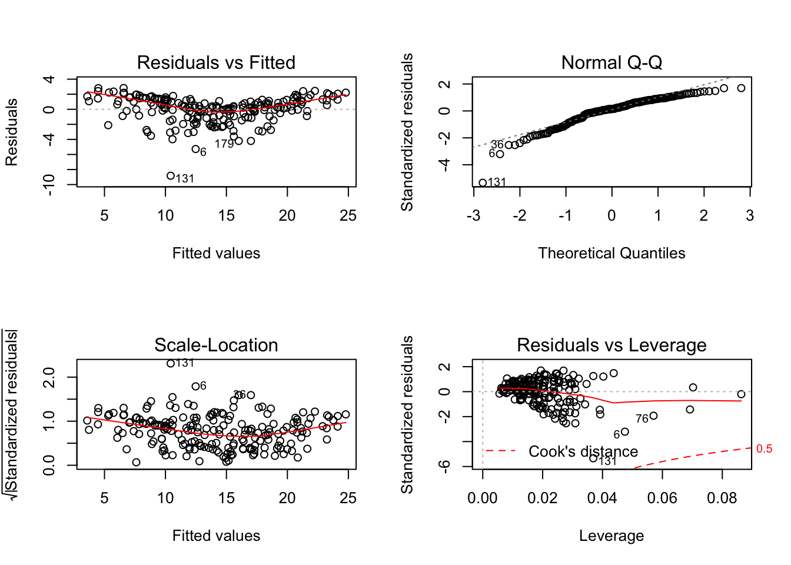

You can download the complete ipython notebook and ipython notebook (pipline version) for the this session.
More details can be found on the offical website for pyspark.ml package.
from pyspark import SparkConf, SparkContext
## set up spark context
from pyspark.sql import SQLContext
sc = SparkContext()
sqlContext = SQLContext(sc)
## set up SparkSession
from pyspark.sql import SparkSession
spark = SparkSession \
.builder \
.appName("Python Spark SQL basic example") \
.config("spark.some.config.option", "some-value") \
.getOrCreate()df = sqlContext.read.format('com.databricks.spark.csv').\
options(header='true', \
inferschema='true').load("./data/Advertising.csv",header=True);df.take(2)
df.printSchema()root
|-- _c0: integer (nullable = true)
|-- TV: double (nullable = true)
|-- Radio: double (nullable = true)
|-- Newspaper: double (nullable = true)
|-- Sales: double (nullable = true)from pyspark.sql import Row
from pyspark.ml.linalg import Vectors# convert the data to dense vector
def transData(data):
return data.rdd.map(lambda r: [Vectors.dense(r[:-1]),r[-1]]).toDF(['features','label'])transformed= transData(df)
transformed.show()+-----------------+-----+
| features|label|
+-----------------+-----+
|[230.1,37.8,69.2]| 22.1|
| [44.5,39.3,45.1]| 10.4|
| [17.2,45.9,69.3]| 9.3|
|[151.5,41.3,58.5]| 18.5|
|[180.8,10.8,58.4]| 12.9|
| [8.7,48.9,75.0]| 7.2|
| [57.5,32.8,23.5]| 11.8|
|[120.2,19.6,11.6]| 13.2|
| [8.6,2.1,1.0]| 4.8|
| [199.8,2.6,21.2]| 10.6|
| [66.1,5.8,24.2]| 8.6|
| [214.7,24.0,4.0]| 17.4|
| [23.8,35.1,65.9]| 9.2|
| [97.5,7.6,7.2]| 9.7|
|[204.1,32.9,46.0]| 19.0|
|[195.4,47.7,52.9]| 22.4|
|[67.8,36.6,114.0]| 12.5|
|[281.4,39.6,55.8]| 24.4|
| [69.2,20.5,18.3]| 11.3|
|[147.3,23.9,19.1]| 14.6|
+-----------------+-----+
only showing top 20 rows# Import LinearRegression class
from pyspark.ml.regression import LinearRegression
# Define LinearRegression algorithm
lr = LinearRegression()
# Fit 2 models, using different regularization parameters
modelA = lr.fit(transformed, {lr.regParam:0.0})
modelB = lr.fit(transformed, {lr.regParam:1.0}) # Make predictions
predictionsA = modelA.transform(transformed)
predictionsA.show()+-----------------+-----+------------------+
| features|label| prediction|
+-----------------+-----+------------------+
|[230.1,37.8,69.2]| 22.1| 20.52397440971517|
| [44.5,39.3,45.1]| 10.4|12.337854820894362|
| [17.2,45.9,69.3]| 9.3|12.307670779994238|
|[151.5,41.3,58.5]| 18.5| 17.59782951168913|
|[180.8,10.8,58.4]| 12.9|13.188671856831299|
| [8.7,48.9,75.0]| 7.2|12.478347634035858|
| [57.5,32.8,23.5]| 11.8|11.729759951563684|
|[120.2,19.6,11.6]| 13.2| 12.12295316550228|
| [8.6,2.1,1.0]| 4.8| 3.727340862861585|
| [199.8,2.6,21.2]| 10.6|12.550848722934685|
| [66.1,5.8,24.2]| 8.6| 7.032299200558857|
| [214.7,24.0,4.0]| 17.4| 17.28512918260026|
| [23.8,35.1,65.9]| 9.2|10.577120733627675|
| [97.5,7.6,7.2]| 9.7| 8.826300480033199|
|[204.1,32.9,46.0]| 19.0|18.434366383561077|
|[195.4,47.7,52.9]| 22.4|20.819299516495455|
|[67.8,36.6,114.0]| 12.5| 12.82365674369938|
|[281.4,39.6,55.8]| 24.4|23.224957158799008|
| [69.2,20.5,18.3]| 11.3| 9.951682059118799|
|[147.3,23.9,19.1]| 14.6|14.166072932273261|
+-----------------+-----+------------------+
only showing top 20 rowspredictionsB = modelB.transform(transformed)
predictionsB.show()+-----------------+-----+------------------+
| features|label| prediction|
+-----------------+-----+------------------+
|[230.1,37.8,69.2]| 22.1| 19.76875575831641|
| [44.5,39.3,45.1]| 10.4|12.681934421326527|
| [17.2,45.9,69.3]| 9.3|12.831279878059057|
|[151.5,41.3,58.5]| 18.5|17.212685096576116|
|[180.8,10.8,58.4]| 12.9|13.565646466441844|
| [8.7,48.9,75.0]| 7.2|13.013004013254886|
| [57.5,32.8,23.5]| 11.8|12.015109427517054|
|[120.2,19.6,11.6]| 13.2|12.282357116553044|
| [8.6,2.1,1.0]| 4.8| 5.16673805973666|
| [199.8,2.6,21.2]| 10.6|12.755472584548897|
| [66.1,5.8,24.2]| 8.6| 8.123762036616027|
| [214.7,24.0,4.0]| 17.4| 16.56110418166338|
| [23.8,35.1,65.9]| 9.2|11.370966908074013|
| [97.5,7.6,7.2]| 9.7| 9.497791423923593|
|[204.1,32.9,46.0]| 19.0|17.838038564514186|
|[195.4,47.7,52.9]| 22.4|19.868060781684964|
|[67.8,36.6,114.0]| 12.5|13.636219112847762|
|[281.4,39.6,55.8]| 24.4| 21.93487824178411|
| [69.2,20.5,18.3]| 11.3|10.503997287424209|
|[147.3,23.9,19.1]| 14.6|14.052394030313582|
+-----------------+-----+------------------+
only showing top 20 rowsRMSE = evaluator.evaluate(predictionsB)
print("ModelB: Root Mean Squared Error = " + str(RMSE))# Import numpy, pandas, and ggplot
import numpy as np
from pandas import *
from ggplot import *
# Create Python DataFrame
pop = transformed.rdd.map(lambda p: (p.features[0])).collect()
sales = transformed.rdd.map(lambda p: (p.label)).collect()
predA = predictionsA.select("prediction").rdd.map(lambda r: r[0]).collect()
predB = predictionsB.select("prediction").rdd.map(lambda r: r[0]).collect()
pydf = DataFrame([predA])
nx,ny = pydf.shape
type1 = Series([0 for x in range(ny)])
type2 = Series([1 for x in range(ny)])
#pydf
# pandas DataFrame
pydf1 = DataFrame({'pop':pop,'sales':sales,'pred':predA,'type':type1})
pydf2 = DataFrame({'pop':pop,'sales':sales,'pred':predB,'type':type2})
frames = [pydf1, pydf2]
result = pd.concat(frames)
result['type'] = result['type'].astype(object)
result# Create scatter plot and two regression models (scaling exponential) using ggplot
ggplot(result, aes(x='pop',y='pred',color='type')) +\
geom_point(colors='blue') from pyspark.ml.linalg import Vectors
df = sqlContext.read.format('com.databricks.spark.csv').\
options(header='true', \
inferschema='true').load("./data/Advertising.csv",header=True);# convert the data to dense vector
def transData(data):
return data.rdd.map(lambda r: [Vectors.dense(r[:-1]),r[-1]]).toDF(['features','label'])transformed= transData(df)
#transformed.show()lr = LinearRegression(maxIter=5, regParam=0.0, solver="normal")model = lr.fit(transformed)model.coefficientsDenseVector([0.0458, 0.1885, -0.001])model.intercept2.9388893694594134def modelsummary(model):
import numpy as np
print "##","Note: the last rows are the information for Intercept"
print "##","-------------------------------------------------"
print "##"," Estimate Std.Error t Values P-value"
coef = np.append(list(model.coefficients),model.intercept)
Summary=model.summary
for i in range(len(Summary.pValues)):
print "##",'{:10.6f}'.format(coef[i]),\
'{:10.6f}'.format(Summary.coefficientStandardErrors[i]),\
'{:8.3f}'.format(Summary.tValues[i]),\
'{:10.6f}'.format(Summary.pValues[i])
print "##",'---'
print "##","Mean squared error: % .6f" % Summary.meanSquaredError, ", RMSE: % .6f" % Summary.rootMeanSquaredError
print "##","Multiple R-squared: %f" % Summary.r2, ", Total iterations: %i"% Summary.totalIterations modelsummary(model)## Note: the last rows are the information for Intercept
## -------------------------------------------------
## Estimate Std.Error t Values P-value
## 0.045765 0.001395 32.809 0.000000
## 0.188530 0.008611 21.893 0.000000
## -0.001037 0.005871 -0.177 0.859915
## 2.938889 0.311908 9.422 0.000000
## ---
## Mean squared error: 2.784126 , RMSE: 1.668570
## Multiple R-squared: 0.897211 , Total iterations: 1temp_path = 'temp/Users/wenqiangfeng/Dropbox/Spark/Code/model'
modelPath = temp_path + "/lr_model"model.save(modelPath)lr2 = model.load(modelPath)lr2.coefficientsDenseVector([0.0458, 0.1885, -0.001])data <- read.csv("./data/Advertising.csv", header = TRUE)fit1 = lm(Sales~.,data = data)
summary(fit1)##
## Call:
## lm(formula = Sales ~ ., data = data)
##
## Residuals:
## Min 1Q Median 3Q Max
## -8.8277 -0.8908 0.2418 1.1893 2.8292
##
## Coefficients:
## Estimate Std. Error t value Pr(>|t|)
## (Intercept) 2.938889 0.311908 9.422 <2e-16 ***
## TV 0.045765 0.001395 32.809 <2e-16 ***
## Radio 0.188530 0.008611 21.893 <2e-16 ***
## Newspaper -0.001037 0.005871 -0.177 0.86
## ---
## Signif. codes: 0 '***' 0.001 '**' 0.01 '*' 0.05 '.' 0.1 ' ' 1
##
## Residual standard error: 1.686 on 196 degrees of freedom
## Multiple R-squared: 0.8972, Adjusted R-squared: 0.8956
## F-statistic: 570.3 on 3 and 196 DF, p-value: < 2.2e-16par(mfrow=c(2,2))
plot(fit1)